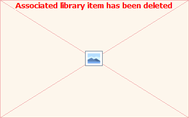

Solubility of a mineral as a function of pH four 4 ionic strengths
External Script File "ReactionDefinition.in"
USE solution 1
Fix_H+ -@pHIterator NaOH 10 #use counter and subsequently change its value by its incremental value
-force_equality true
O2(g) -0.677
Fe(OH)3(a) 0 0
External Script File "Solution1.in"
SOLUTION 1
pH @pHStart #pH is linked to the initial pH
units mol/kgw
Fe(3) 1e-1
Na @=ISiterator #use counter without changing its value
F @/ISiterator #use counter and subsequently divide its value by its incremental value
end
include$ solubility.in #loop over pH for the current ionic strength conditions
end
punch 1000 gnuplot "10^{@<log10(@=ISiterator)> M}" #indicate a new dataset when using gnuplot for plotting: two empty lines and a heading are included
counter &pHIterator #reset counter to its starting value
end
Phreeqc input file
PHASES
Fix_H+; H+ = H+; log_k 0
GLOBAL_VARIABLE pHStart 2
GLOBAL_VARIABLE pHEnd 12
GLOBAL_VARIABLE pHSteps 100
GLOBAL_VARIABLE ISStart 1E-1
GLOBAL_VARIABLE ISEnd 1E-4
GLOBAL_VARIABLE ISSteps 4
COUNTER pHIterator @pHStart #define pH iterator
COUNTERINCR pHIterator = (@pHEnd-@pHStart)/@pHSteps "+" "4.2e"
COUNTER ISiterator @ISStart
COUNTERINCR ISiterator = 10*(log10(@ISStart)-log10(@ISEnd))/(@ISSteps-1) #define ionic strength iterator
REPEAT "ReactionDefinition.in" "solubility.in" @pHSteps #create file for looping over pH
REPEAT "Solution1.in" "ionicstrength.in" @ISSteps #create file for looping over ionic strength
selected_output 1000
-file solubility.out2
-totals Fe Na F
-pH
-ionic_strength
selected_graph 1000
...
-key "IonicStrength" ISIterator "gnuplot format"
-fig_x pH
-fig_y Fe < km IonicStrength i all>
end
-reset false
include$ ionicstrength.in

Created with the Personal Edition of HelpNDoc: Maximize Your Productivity with a Help Authoring Tool